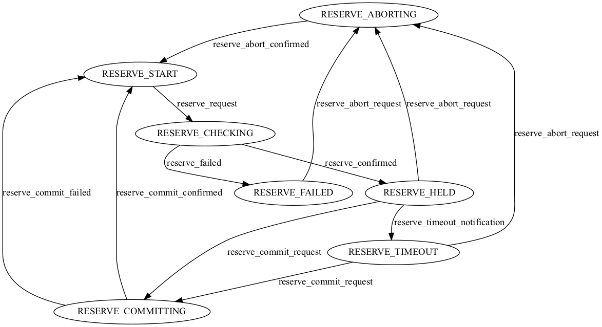
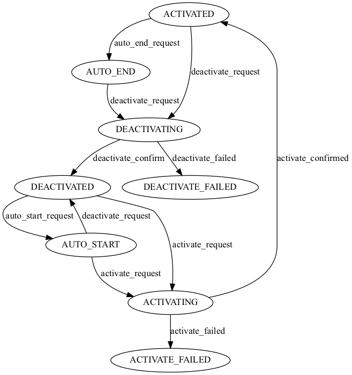

API
supa
Initial configuration for SuPA.
This being the top level package, structured logging is configured here so that it is available everywhere else by means of:
import structlog
...
logger = structlog.get_logger(__name__)
All possible configurable settings are defined here as part of Settings.
All these settings have a default values,
that are overwritten by whatever values those settings have,
if any,
in the configuration file supa.env.
See also resolve_env_file()
- supa.get_project_root() Path
Return project root directory.
- Returns:
project root directory
- class supa.JournalMode(value)
A (subset) of the journal modes as supported by SQLite.
Preferably we should use the
WALjournal mode for SQLite as that provides the best concurrency; allowing for multiple READs to occur while a WRITE is in progress. Without WAL, as the journal mode, SQLite locks the entire database as soon as a transaction starts. As SuPA also uses SQLAlchemy, that happens to issue a transaction upon session creation, this could have a negative performance impact.However,
WALjournal mode does not work well with networked file systems, such as NFS. This might also hold for some, or most of the Kubernetes storage volumes. If in doubt use alocalvolume.See also
But don’t let these warnings fool you. SQLlite is a wickedly fast database that matches SuPA’s needs perfectly.
- WAL = 'WAL'
- TRUNCATE = 'TRUNCATE'
- DELETE = 'DELETE'
- class supa.Settings(_env_file: str | PathLike | List[str | PathLike] | Tuple[str | PathLike, ...] | None = '<object object>', _env_file_encoding: str | None = None, _env_nested_delimiter: str | None = None, _secrets_dir: str | PathLike | None = None, *, grpc_server_max_workers: int = 8, grpc_server_insecure_host: str = 'localhost', grpc_server_insecure_port: str = '50051', grpc_client_insecure_host: str = 'localhost', grpc_client_insecure_port: str = '9090', document_server_host: str = 'localhost', document_server_port: int = 4321, scheduler_max_workers: int = 12, database_journal_mode: JournalMode = JournalMode.WAL, database_file: Path = PosixPath('supa.db'), topology_freshness: int = 60, log_level: str = '', domain: str = 'example.domain:2013', topology: str = 'topology', manual_topology: bool = False, reserve_timeout: int = 120, backend: str = '', nsa_scheme: str = 'http', nsa_host: str = 'localhost', nsa_port: str = '8080', nsa_name: str = 'example.domain uPA', nsa_provider_path: str = '/provider', nsa_topology_path: str = '/topology', nsa_discovery_path: str = '/discovery', nsa_owner_timestamp: str = '19700101T000000Z', nsa_owner_firstname: str = 'Firstname', nsa_owner_lastname: str = 'Lastname', nsa_latitude: str = '-0.374350', nsa_longitude: str = '-159.996719', topology_name: str = 'example.domain topology', nsa_start_time: datetime = datetime.datetime(2023, 3, 24, 15, 34, 27, 667719, tzinfo=datetime.timezone.utc))
Application wide settings with default values.
See also: the
supa.envfile- grpc_server_max_workers: int
- grpc_server_insecure_host: str
- grpc_server_insecure_port: str
The host and port SuPA is listening on.
- grpc_client_insecure_host: str
- grpc_client_insecure_port: str
The host and port the Requester Agent/PolyNSI is listening on.
- document_server_host: str
- document_server_port: int
- scheduler_max_workers: int
- database_journal_mode: JournalMode
- database_file: Path
- topology_freshness: int
- log_level: str
- domain: str
- topology: str
- manual_topology: bool
- reserve_timeout: int
- backend: str
- nsa_scheme: str
- nsa_host: str
- nsa_port: str
- nsa_name: str
- nsa_provider_path: str
- nsa_topology_path: str
- nsa_discovery_path: str
- nsa_owner_timestamp: str
- nsa_owner_firstname: str
- nsa_owner_lastname: str
- nsa_latitude: str
- nsa_longitude: str
- topology_name: str
- property nsa_exposed_url: str
Return URL that NSA is exposed on constructed from nsa_scheme, nsa_host and nsa_port.
- get_nsa_id() str
Construct NSA ID using Settings.domain.
- supa.resolve_env_file() Path
Resolve env file by looking at specific locations.
Depending on how the project was installed we find the env file in different locations. When pip performs a regular install it will process the
data_filessections insetup.cfg. The env file is specified in that section and the location specified there (hard coded here) is the first location checked.Editable pip installs do not process that section. Hence the location of the env file can be found relative to the top level
supapackage in the source tree (where this code is located). This is the second location checked.If none of these locations results in finding the env file we give up.
- Returns:
The path where the env file was found or
None- Raises:
FileNotFoundError – if the env file could not be resolved/found.
- supa.resolve_database_file(database_file: Path | str) Path
Resolve the location of the database file.
SQLite stores its database in a file. If the file does not exist, it will be created automatically. This means that if we get the reference to that file wrong, a new one will be created. This leads to all kinds of unexpected problems. Hence we need a way to predictably resolve the location of the database file.
resolve_database_file()uses the following algorithm:If
database_fileis an absolute path, we are done. Otherwise determine if SuPA was installed normally or in editable mode/development mode. In case of the former resolvedatabase_filerelative to<venv_dir>/var/dbIn case of the latter resolvedatabase_filerelative to the project root.- Parameters:
database_file – relative or absolute filename of database file
- Returns:
Fully resolved/obsolute path name to database file
- supa.settings = Settings(grpc_server_max_workers=8, grpc_server_insecure_host='localhost', grpc_server_insecure_port='50051', grpc_client_insecure_host='localhost', grpc_client_insecure_port='9090', document_server_host='localhost', document_server_port=4321, scheduler_max_workers=12, database_journal_mode=<JournalMode.WAL: 'WAL'>, database_file=PosixPath('supa.db'), topology_freshness=60, log_level='INFO', domain='example.domain:2001', topology='topology', manual_topology=False, reserve_timeout=120, backend='', nsa_scheme='http', nsa_host='localhost', nsa_port='8080', nsa_name='example.domain uPA', nsa_provider_path='/provider', nsa_topology_path='/topology', nsa_discovery_path='/discovery', nsa_owner_timestamp='19700101T000000Z', nsa_owner_firstname='Firstname', nsa_owner_lastname='Lastname', nsa_latitude='-0.374350', nsa_longitude='-159.996719', topology_name='example.domain topology', nsa_start_time=datetime.datetime(2023, 3, 24, 15, 34, 27, 667719, tzinfo=datetime.timezone.utc))
Application wide settings.
Initially this only has the settings, as specified in the env file and environment, resolved. Command line processing should overwrite specific settings, when appropriate, to reflect that this takes precedence. As a result you should see code updating
settingsin most, if not all, Click callables (sub commands) defined insupa.main
- class supa.UnconfiguredScheduler(gconfig={}, **options)
Fail safe fake scheduler to guard against premature scheduler usage.
The BackgroundScheduler can only be initialized after all settings have been resolved. This means that we cannot initialize it at the module level. After all, at the time this module is being executed the default settings and those of the env file have been processed, those specified on the commend line might not have been processed. At the same time we want to keep easy access to the
scheduleras a module level attribute. So we configure theschedulerwith this safe guard class only to overwrite it with the real thing after command line options have been processed.- exc_msg = 'Scheduler has not yet been initialized. Call `main.init_app` first. Only then (locally) import `scheduler`.\n\nIMPORTANT\n==========\nMake sure you have processed all the different ways of dealing with application\nconfiguration before you call `main.init_app`. The env file (`supa.env`) and\nthe environment are handled automatically by the `supa.settings` instance.\nHowever anything specified on the command line generally needs to be processed\nexplicitly in the module `supa.main`.\n'
- shutdown(wait=True)
Trap premature call and raise an exception.
- wakeup()
Trap premature call and raise an exception.
- start(paused=False)
Trap premature calls and raise an exception.
- add_job(func, trigger=None, args=None, kwargs=None, id=None, name=None, misfire_grace_time=<undefined>, coalesce=<undefined>, max_instances=<undefined>, next_run_time=<undefined>, jobstore='default', executor='default', replace_existing=False, **trigger_args)
Trap premature calls and raise an exception.
- supa.scheduler = <supa.UnconfiguredScheduler object>
Application scheduler for scheduling and executing jobs
schedulercan only be used after a call tomain.init_app(). That, in turn, can only be called after all application configuration has been resolved, eg. after command line processing.main.init_app()will replaceschedulerwith a properBackgroundScheduler.
- supa.init_app(with_scheduler: bool = True) None
Initialize the application (database, scheduler, etc) and recover jobs``.
init_app()should only be called after all application configuration has been resolved. Most of that happens implicitly insupa, but some of needs to be done after processing command line options.For instance,
init_app()assumessettings(thedatabase_fileattribute of it) has been updated after command line processing, that is, if the setting was changed on the command line. That way the command line options have had the ability to override the default values, those of the env file and environment variables.Note
Only import
supa.db.Sessionafter the call toinit_app(). If imported earlier,supa.db.Sessionwill refer tosupa.db.UnconfiguredSessionand you will get a nice exception upon usage.Likewise only import
schedulerafter the call toinit_app(). If imported earlier,schedulerwill refer toUnconfiguredSchedulerand you will get an equally nice exception.If the scheduler is to be initialized as well (see:
with_scheduler) it will also be started.- Parameters:
with_scheduler – if True, initialize and start scheduler. If False, don’t.
- supa.recover_jobs() None
Recover jobs from a previous run with_scheduler.
recover_jobs()should only be called afterinit_app()was called and the scheduler is running.Try to recover all jobs that did not finish. All af SuPA’s asynchronous work is performed by jobs that the scheduler schedules. If SuPA is terminated before these jobs have had a chance to run to completion, they might be recovered by looking at the state of their work in the database.
See Also:
supa.job.shared.Job
supa.const
Application wide constants.
- supa.const.SERVICE_TYPE = 'http://services.ogf.org/nsi/2013/12/descriptions/EVTS.A-GOLE'
Currently only one Service Type is supported.
supa.main
SuPA main entry point.
SuPA has a single entry point defined in this module,
namely cli().
That is what is executed when the supa command is issued from the command-line.
The other @cli.command annotated functions in this modules implement the various sub-commands.
- class supa.main.CommonOptionsState(database_file: Path | None = None, log_level: str | None = None)
Class to capture common options shared between Click callables/sub commands.
- supa.main.pass_common_options_state(f: F) F
Define custom decorator to pass in an CommonOptionState instance as first argument.
When decorating a Click callable/sub command with the :func`common_options` decorator the Click options defined in that decorator will become part of the sub command as if they where defined directly on the sub command. These common options however will not be pass in the argument list to the sub command. Reason being that we don’t know beforehand how many extra common options
common_options()defines, or if that number later changes possibly breaking existing code. Instead we want a single state capturing object to be passed in.Usage:
@cli.command(context_settings=CONTEXT_SETTINGS) @click.option("--fu", ...) @click.option("--bar",...) @common_options # <--- usage @pass_common_options_state # <--- usage def my_sub_command(common_options: CommonOptionsState, fu: str, bar: str) -> None: # explicitly update ``settings`' attributes if they match command line options settings.fu = fu settings.bar = bar ... # with all settings resolved, we can now initialize the application properly. init_app() # actual sub command stuff ...
- supa.main.database_file_option(f)
Define common option for specifying database file location.
- supa.main.log_level_option(f)
Define common option for specifying log level.
- supa.main.common_options(f)
Provide the means to declare common options to Click callables/sub command.
supa
Manage the SURF ultimate Provider Agent from the command line.
Configuration variables can be set using (in order of precedence):
For more information see supa.env.
supa [OPTIONS] COMMAND [ARGS]...
connection
Connection subcommands.
supa connection [OPTIONS] COMMAND [ARGS]...
list
List connections.
supa connection list [OPTIONS]
Options
- --only <only>
Limit list of connections [default: list all]
- Options:
current | past
- --order-by <order_by>
Order connections
- Options:
start_time | end_time
- --log-level <log_level>
Log level (DEBUG, INFO, WARNING, ERROR, CRITICAL)
- --database-file <database_file>
Location of the SQLlite database file
reservation
Reservations subcommands.
supa reservation [OPTIONS] COMMAND [ARGS]...
list
List reservations.
supa reservation list [OPTIONS]
Options
- --only <only>
Limit list of reservations [default: list all]
- Options:
current | past
- --order-by <order_by>
Order reservations
- Options:
start_time | end_time
- --log-level <log_level>
Log level (DEBUG, INFO, WARNING, ERROR, CRITICAL)
- --database-file <database_file>
Location of the SQLlite database file
serve
Start the gRPC server and listen for incoming requests.
supa serve [OPTIONS]
Options
- --grpc-server-max-workers <grpc_server_max_workers>
Maximum number of workers to serve gRPC requests.
- --grpc-server-insecure-host <grpc_server_insecure_host>
GRPC server host to listen on.
- --grpc-server-insecure-port <grpc_server_insecure_port>
GRPC server port to listen on.
- --grpc-client-insecure-host <grpc_client_insecure_host>
Host that PolyNSI listens on.
- --grpc-client-insecure-port <grpc_client_insecure_port>
Port that PolyNSI listens on.
- --document-server-host <document_server_host>
Host that the document server listens on.
- --document-server-port <document_server_port>
Port that the document server listens on.
- --scheduler-max-workers <scheduler_max_workers>
Maximum number of workers to execute scheduler jobs.
- --domain <domain>
Name of the domain SuPA is responsible for.
- --topology <topology>
Name of the topology SuPA is responsible for.
- --manual-topology
Use SuPA CLI to manually administrate topology.
- --reserve-timeout <reserve_timeout>
Reserve timeout in seconds.
- --backend <backend>
Name of backend module.
- --nsa-host <nsa_host>
Name of the host where SuPA is exposed on.
- --nsa-port <nsa_port>
Port where SuPA is exposed on.
- --nsa-name <nsa_name>
Descriptive name for this uPA.
- --nsa-scheme <nsa_scheme>
URL scheme of the exposed service.
- --nsa-provider-path <nsa_provider_path>
Path of the NSI provider endpoint.
- --nsa-topology-path <nsa_topology_path>
Path of the NSI topology endpoint.
- --nsa-discovery-path <nsa_discovery_path>
Path of the NSI discovery endpoint.
- --nsa-owner-timestamp <nsa_owner_timestamp>
Timestamp when the owner information was last change.
- --nsa-owner-firstname <nsa_owner_firstname>
Firstname of the owner of this uPA.
- --nsa-owner-lastname <nsa_owner_lastname>
Lastname of the owner of this uPA.
- --nsa-latitude <nsa_latitude>
Latitude of this uPA.
- --nsa-longitude <nsa_longitude>
Longitude of this uPA.
- --topology-name <topology_name>
Descriptive name for the exposed topology.
- --topology-freshness <topology_freshness>
Number of seconds before fetching topology from backend again.
- --log-level <log_level>
Log level (DEBUG, INFO, WARNING, ERROR, CRITICAL)
- --database-file <database_file>
Location of the SQLlite database file
stp
STP subcommands.
supa stp [OPTIONS] COMMAND [ARGS]...
add
Add STP to topology.
supa stp add [OPTIONS]
Options
- --stp-id <stp_id>
Required Uniq ID of the STP.
- --port-id <port_id>
Required ID of the corresponding port.
- --vlans <vlans>
Required VLANs part of this STP.
- --description <description>
STP description.
- --is-alias-in <is_alias_in>
Inbound STP ID from connected topology.
- --is-alias-out <is_alias_out>
Outbound STP ID to connected topology.
- --bandwidth <bandwidth>
Required Available bandwidth for this STP in Mbps.
- --enabled, --disabled
- --log-level <log_level>
Log level (DEBUG, INFO, WARNING, ERROR, CRITICAL)
- --database-file <database_file>
Location of the SQLlite database file
delete
Delete STP from topology (if not in use or previously used).
A STP can only be deleted if it was never used in a reservation. Once used a STP cannot be deleted again. A STP can be disabled though! This will take it out of the pool of STP’s reservations (and hence connections) are made against. See the disable command.
supa stp delete [OPTIONS]
Options
- --stp-id <stp_id>
Required STP id to be deleted from topology.
- --log-level <log_level>
Log level (DEBUG, INFO, WARNING, ERROR, CRITICAL)
- --database-file <database_file>
Location of the SQLlite database file
disable
Do not expose STP in topology.
Disabling a STP makes it unavailable for reservation requests.
supa stp disable [OPTIONS]
Options
- --stp-id <stp_id>
Required STP id to be disabled.
enable
Expose STP in topology.
Enabling a STP makes it available for reservation requests.
supa stp enable [OPTIONS]
Options
- --stp-id <stp_id>
Required STP id to be enabled.
list
List STP’s known to this uPA.
supa stp list [OPTIONS]
Options
- --only <only>
Limit list of ports [default: list all]
- Options:
enabled | disabled
- --log-level <log_level>
Log level (DEBUG, INFO, WARNING, ERROR, CRITICAL)
- --database-file <database_file>
Location of the SQLlite database file
supa.db.session
Setup the DB, configure SQLAlchemy and define the schema.
Due to SuPA’s modest DB requirements we have chosen to use SQLite.
It is very easy to use,
does not require a full client/server setup,
and it is wickedly fast.
There are some limitations with regards to concurrency,
but those will not affect SuPA with its low DB WRITE needs;
especially when configured with the WAL journal mode.
Usage
Warning
Due to how SuPA initializes itself, whatever needs to be imported from this module, needs to be imported locally!
When anything from this module is imported at the top of other modules some things within this module might not yet have been correctly initialized. Most notable the location of the SQLite database file. Once the initialization has been completed, these already imported objects will still refer to the old uninitialized ones. Don’t worry too much about it; you will get an informative error. But just to be on the safe side, always import anything from this module locally!
- supa.db.session.set_sqlite_pragma(dbapi_connection: Connection, connection_record: _ConnectionRecord) None
Configure certain SQLite settings.
These settings, issued as SQLite pragmas, need to be configured on each connection. Hence the usage of SQLAlchemy’s engine’s connect event.
- class supa.db.session.UnconfiguredSession
Fail safe fake session class to guard against premature SQLAlchemy session usage.
SQLAlchemy’s engine, and hence session, can only be initialized after all settings have been resolved. This means that we cannot initialize it at the module level. After all, at the time this module is being executed the default settings and those of the env file have been processed, those specified on the commend line might not have been processed. At the same time we want to keep easy access to the
Sessionas a module level attribute. So we configure theSessionwith this safe guard class only to overwrite it with the real thing after command line options have been processed.
- supa.db.session.Session = <supa.db.session.UnconfiguredSession object>
SQLAlchemy Session for accessing the database.
Sessioncan only be used after a call tomain.init_app(). That, in turn, can only be called after all application configuration has been resolved, eg. after command line processing.main.init_app()will replaceSessionwith a proper SQLAlchemy (scoped)Session.
- supa.db.session.db_session() Iterator[scoped_session]
Context manager for using an SQLAlchemy session.
It will automatically commit the session upon leaving the context manager. It will rollback the session if an exception occurred while in the context manager. re-raising the exception afterwards.
Example:
my_model = MyModel(fu="fu", bar="bar") with db_session() as session: session.add(my_model)
- Raises:
Exception – Actually whatever exception that was raised while the context manager was active.
supa.db.model
Define the database models.
Surrogate keys versus natural keys
Looking at the model definitions you’ll find that we have used natural keys wherever possible. Though no too common these days, with the prevalent use of ORMs that automatically generate a surrogate key per model, SQLAlchemy is flexible enough to model things ‘naturally’ from a relational database point of view. This sometimes results in composite primary keys.
Foreign keys to these composite primary keys cannot be defined on a specific Column definition
or even a set of Column definitions.
Something that does work for composite primary key definitions.
Instead,
these foreign keys need to be defined using a
ForeignKeyConstraint
on the __table_args__ attribute of the DB model.
Connection IDs
Looking at example messages in the different specifications:
we see that connection IDs always seem to be formatted as UUID’s.
However, according to its definition in GWD-R-P.237,
it can be any string as long as it is unique within the context of a PA.
That is the reason that we have modelled connection IDs from other NSA’s
(ag_connection_id, upa_connection_id)
as TEXT.
Within SuPA we have decided to use UUID’s for our connection_id’s.
SQLAlchemy Model Dependency Diagram
A visual representation of how everything is wired together should help navigating the Python code a lot better.

- class supa.db.model.Uuid(*args, **kwargs)
Implement SQLAlchemy Uuid column type for SQLite databases.
This stores Python
uuid.UUIDtypes as strings (CHAR(36)) in the database. We have chosen to store theuuid.UUID.__str__()representation directly, eg. with"-"between the UUID fields, for improved readability.- process_bind_param(value: UUID | None, dialect: Dialect) str | None
Receive a bound parameter value to be converted.
Subclasses override this method to return the value that should be passed along to the underlying
TypeEngineobject, and from there to the DBAPIexecute()method.The operation could be anything desired to perform custom behavior, such as transforming or serializing data. This could also be used as a hook for validating logic.
This operation should be designed with the reverse operation in mind, which would be the process_result_value method of this class.
- Parameters:
value – Data to operate upon, of any type expected by this method in the subclass. Can be
None.dialect – the
Dialectin use.
- process_result_value(value: str | None, dialect: Dialect) UUID | None
Receive a result-row column value to be converted.
Subclasses should implement this method to operate on data fetched from the database.
Subclasses override this method to return the value that should be passed back to the application, given a value that is already processed by the underlying
TypeEngineobject, originally from the DBAPI cursor methodfetchone()or similar.The operation could be anything desired to perform custom behavior, such as transforming or serializing data. This could also be used as a hook for validating logic.
- Parameters:
value – Data to operate upon, of any type expected by this method in the subclass. Can be
None.dialect – the
Dialectin use.
This operation should be designed to be reversible by the “process_bind_param” method of this class.
- class supa.db.model.ReprBase
Custom SQLAlchemy model to provide meaningful
__str__()and__repr__()methods.Writing appropriate
__repr__and__str__methods for all your SQLAlchemy ORM models gets tedious very quickly. By using SQLAlchemy’s Runtime Inspection API this base class can easily generate these methods for you.Note
This class cannot be used as a regular Python base class due to assumptions made by
declarative_base. See Usage below instead.Usage:
Base = declarative_base(cls=ReprBase)
- exception supa.db.model.UtcTimestampException
Exception class for custom UtcTimestamp SQLAlchemy column type.
- class supa.db.model.UtcTimestamp(*args, **kwargs)
Custom SQLAlchemy column type for storing timestamps in UTC in SQLite databases.
This column type always returns timestamps with the UTC timezone. It also guards against accidentally trying to store Python naive timestamps (those without a time zone).
In the SQLite database the timestamps are stored as strings of format:
yyyy-mm-dd hh:mm:ss. UTC is always implied.- process_bind_param(value: datetime | None, dialect: Dialect) datetime | None
Receive a bound parameter value to be converted.
Subclasses override this method to return the value that should be passed along to the underlying
TypeEngineobject, and from there to the DBAPIexecute()method.The operation could be anything desired to perform custom behavior, such as transforming or serializing data. This could also be used as a hook for validating logic.
This operation should be designed with the reverse operation in mind, which would be the process_result_value method of this class.
- Parameters:
value – Data to operate upon, of any type expected by this method in the subclass. Can be
None.dialect – the
Dialectin use.
- process_result_value(value: datetime | None, dialect: Dialect) datetime | None
Receive a result-row column value to be converted.
Subclasses should implement this method to operate on data fetched from the database.
Subclasses override this method to return the value that should be passed back to the application, given a value that is already processed by the underlying
TypeEngineobject, originally from the DBAPI cursor methodfetchone()or similar.The operation could be anything desired to perform custom behavior, such as transforming or serializing data. This could also be used as a hook for validating logic.
- Parameters:
value – Data to operate upon, of any type expected by this method in the subclass. Can be
None.dialect – the
Dialectin use.
This operation should be designed to be reversible by the “process_bind_param” method of this class.
- class supa.db.model.Reservation(**kwargs)
DB mapping for registering NSI reservations.
- src_stp(selected: bool = False) Stp
Return
STPinstance for src data.Depending on where we are in the reservation process, we need to deal with a requested VLAN(s)(ranges), or a selected VLAN. The
selectedparameter determines which of the two will be used for thelabelsargument to theStpobject.- Parameters:
selected – if True, use ‘selected VLAN` instead of requested VLAN(s)(ranges)
- Returns:
Stpobject
- dst_stp(selected: bool = False) Stp
Return
STPinstance for dst data.Depending on where we are in the reservation process, we need to deal with a requested VLAN(s)(ranges), or a selected VLAN. The
selectedparameter determines which of the two will be used for thelabelsargument to theStpobject.- Parameters:
selected – if True, use ‘selected VLAN` instead of requested VLAN(s)(ranges)
- Returns:
Stpobject
- class supa.db.model.PathTrace(**kwargs)
DB mapping for PathTraces.
- class supa.db.model.Path(**kwargs)
DB mapping for Paths.
- class supa.db.model.Segment(**kwargs)
DB mapping for Segment.
- class supa.db.model.Stp(**kwargs)
DB Mapping for STP.
- class supa.db.model.Parameter(**kwargs)
DB mapping for PointToPointService Parameters.
- class supa.db.model.Topology(**kwargs)
DB mapping for STP’s and ports in the topology from the NRM.
- class supa.db.model.Connection(**kwargs)
DB mapping for registering connections to be build/built.
It stores references to the actual STP’s used in the connection as listed in :class`Topology` and the
circuit_idof the circuit in the NRM.
- supa.db.model.connection_to_dict(connection: Connection) Dict[str, Any]
Create a dict from a Connection.
A convenience function to create a dict that can be used as parameter list to all backend methods.
- class supa.db.model.Notification(**kwargs)
DB mapping for registering notifications against a connection ID.
Store the notification for a connection ID serialized to string together with a linearly increasing identifier that can be used for ordering notifications in the context of the connection ID.
- class supa.db.model.Result(**kwargs)
DB mapping for registering results against a connection ID.
Store the async result to a provider request serialized to string together with a linearly increasing identifier that can be used for ordering results in the context of the connection ID. Results of requests from a RA to a PA are stored so they can be retrieved later in case only synchronous communication is possible between the RA and PA.
supa.job.reserve
- class supa.job.reserve.StpResources(bandwidth: int, vlans: VlanRanges)
Capture STP resources, as returned by an SQLAlchemy query, so that they can be referred to by name.
- bandwidth: int
Alias for field number 0
- vlans: VlanRanges
Alias for field number 1
- class supa.job.reserve.ReserveJob(connection_id: UUID)
Handle reservation requests.
- classmethod recover() List[Job]
Recover ReserveJob’s that did not get to run before SuPA was terminated.
- Returns:
List of ReserveJob’s that still need to be run.
- trigger() DateTrigger
Return APScheduler trigger information for scheduling ReserveJob’s.
- class supa.job.reserve.ReserveCommitJob(connection_id: UUID)
Handle reservation commit requests.
- classmethod recover() List[Job]
Recover ReserveCommitJob’s that did not get to run before SuPA was terminated.
- Returns:
List of ReserveCommitJob’s that still need to be run.
- trigger() DateTrigger
Trigger for ReserveCommitJobs.
- class supa.job.reserve.ReserveAbortJob(connection_id: UUID)
Handle reservation obort requests.
- classmethod recover() List[Job]
Recover ReserveAbortJob’s that did not get to run before SuPA was terminated.
- Returns:
List of ReserveAbortJob’s that still need to be run.
- trigger() DateTrigger
Trigger for ReserveAbortJobs.
- class supa.job.reserve.ReserveTimeoutJob(connection_id: UUID)
Handle reserve timeouts.
- classmethod recover() List[Job]
Recover ReserveTimeoutJob’s that did not get to run before SuPA was terminated.
The current implementation just re-adds a new reservation timeout for all reservations that are still in ReserveHeld, potentially almost doubling the original reservation hold time.
- Returns:
List of ReserveTimeoutJob’s that still need to be run.
- trigger() DateTrigger
Trigger for ReserveTimeoutJobs.
supa.job.provision
- class supa.job.provision.ProvisionJob(connection_id: UUID)
Handle provision requests.
- classmethod recover() List[Job]
Recover ProvisionJob’s that did not get to run before SuPA was terminated.
Only include jobs for reservations that are still supposed to have its data plane activated according to their lifecycle state and end time.
- Returns:
List of ProvisionJob’s that still need to be run.
- trigger() DateTrigger
Trigger for ProvisionJobs.
supa.job.lifecycle
- class supa.job.lifecycle.TerminateJob(connection_id: UUID)
Handle provision requests.
- classmethod recover() List[Job]
Recover TerminateJobs’s that did not get to run before SuPA was terminated.
- Returns:
List of TerminateJob’s that still need to be run.
- trigger() DateTrigger
Trigger for TerminateJob’s.
supa.job.query
- supa.job.query.create_query_confirmed_request(pb_query_request: QueryRequest) QueryConfirmedRequest
Create a list of reservation information matching the request.
- Parameters:
pb_query_request – Query request with match criteria.
- Returns:
List of reservation information.
- supa.job.query.create_query_notification_confirmed_request(pb_query_notification_request: QueryNotificationRequest) QueryNotificationConfirmedRequest
Get a list of notifications for connection ID supplied by query notification request.
Query notification(s) of requested connection ID, if any, optionally limiting the notifications by start and end notification ID.
- Parameters:
pb_query_notification_request (QueryNotificationRequest) –
- Returns:
QueryNotificationConfirmedRequest with list of notifications.
- supa.job.query.create_query_result_confirmed_request(pb_query_result_request: QueryResultRequest) QueryResultConfirmedRequest
Get a list of results for connection ID supplied by query result request.
Query results(s) of requested connection ID, if any, optionally limiting the notifications by start and end result ID.
- Parameters:
pb_query_result_request (QueryResultRequest) –
- Returns:
QueryResultConfirmedRequest with list of results.
- class supa.job.query.QuerySummaryJob(pb_query_request: QueryRequest)
Handle query summary requests.
- classmethod recover() List[Job]
Recover QuerySummaryJob’s that did not get to run before SuPA was terminated.
As no query summary request details are stored in the database (at this time), it is not possible to recover QuerySummaryJob’s.
- Returns:
List of QuerySummaryJob’s that still need to be run (currently always empty List).
- trigger() DateTrigger
Trigger for QuerySummaryJob’s.
- Returns:
DateTrigger set to None, which means run now.
- class supa.job.query.QueryRecursiveJob(pb_query_request: QueryRequest)
Handle query recursive requests.
- classmethod recover() List[Job]
Recover QueryRecursiveJob’s that did not get to run before SuPA was terminated.
As no query recursive request details are stored in the database (at this time), it is not possible to recover QueryRecursiveJob’s.
- Returns:
List of QueryRecursiveJob’s that still need to be run (currently always empty List).
- trigger() DateTrigger
Trigger for QueryRecursiveJob’s.
- Returns:
DateTrigger set to None, which means run now.
- class supa.job.query.QueryNotificationJob(pb_query_notification_request: QueryNotificationRequest)
Handle query notification requests.
- classmethod recover() List[Job]
Recover QueryNotificationJob’s that did not get to run before SuPA was terminated.
As no query notification request details are stored in the database (at this time), it is not possible to recover QueryNotificationJob’s.
- Returns:
List of QueryNotificationJob’s that still need to be run (currently always empty List).
- trigger() DateTrigger
Trigger for QueryNotificationJob’s.
- Returns:
DateTrigger set to None, which means run now.
- class supa.job.query.QueryResultJob(pb_query_result_request: QueryResultRequest)
Handle query result requests.
- classmethod recover() List[Job]
Recover QueryResultJob’s that did not get to run before SuPA was terminated.
As no query result request details are stored in the database (at this time), it is not possible to recover QueryResultJob’s.
- Returns:
List of QueryResultJob’s that still need to be run (currently always empty List).
- trigger() DateTrigger
Trigger for QueryResultJob’s.
- Returns:
DateTrigger set to None, which means run now.
supa.job.dataplane
- class supa.job.dataplane.ActivateJob(connection_id: UUID)
Handle data plane activation requests.
- classmethod recover() List[Job]
Recover ActivationJob’s that did not get to run before SuPA was terminated.
Only include jobs for reservations that are still supposed to have its data plane activated according to their lifecycle state and end time.
- Returns:
List of ActivationJob’s that still need to be run.
- trigger() DateTrigger
Trigger for ActivateJob’s.
- Returns:
DateTrigger set to start_time of reservation.
- class supa.job.dataplane.DeactivateJob(connection_id: UUID)
Handle data plane deactivation requests.
- classmethod recover() List[Job]
Recover DeactivationJob’s that did not get to run before SuPA was terminated.
Also include jobs for reservations that are passed end time to ensue date plane is deactivated, hence reservations are not filtered on lifecycle state or end time.
- Returns:
List of DeactivationJob’s that still need to be run.
- trigger() DateTrigger
Trigger for DeactivateJob’s.
- Returns:
DateTrigger set to None if (run immediately) if reservation is released or not active anymore or to end_time otherwise (end_time can be in the past when recovering).
- class supa.job.dataplane.AutoStartJob(connection_id: UUID)
Handle automatic activation of data plane when start time is reached.
- classmethod recover() List[Job]
Recover AutoStartJob’s that did not get to run before SuPA was terminated.
Only include jobs for reservations that are still supposed to have its data plane activated according to their lifecycle state and end time.
- Returns:
List of AutoStartJob’s that still need to be run.
- trigger() DateTrigger
Trigger for AutoStartJob’s.
- Returns:
AutoStart set to start_time of reservation.
- class supa.job.dataplane.AutoEndJob(connection_id: UUID)
Handle automatic deactivation of data plane when end time is reached.
- classmethod recover() List[Job]
Recover AutoEndJob’s that did not get to run before SuPA was terminated.
- Returns:
List of AutoEndJob’s that still need to be run.
- trigger() DateTrigger
Trigger for AutoEndJob’s.
- Returns:
AutoEnd set to end_time of reservation.
supa.connection.fsm
Define the three NSI Connection Service state machines.
The NSI Connection Service defines three state machines that, together with the message processing functions (=coordinator functions in NSI parlance), model the behaviour of the protocol.
They are:
ReservationStateMachine(RSM)ProvisionStateMachine(PSM)LifecycleStateMachine(LSM)
The state machines explicitly regulate the sequence in which messages are processed. The CS messages are each assigned to one of the three state machines: RSM, PSM and LSM. When the first reserve request for a new Connection is received, the function processing the reserve requests MUST coordinate the creation of the RSM, PSM and LSM state machines for that specific connection.
The RSM and LSM MUST be instantiated as soon as the first Connection request is received.
The PSM MUST be instantiated as soon as the first version of the reservation is committed.
- class supa.connection.fsm.SuPAStateMachine(*args: Any, **kwargs: Any)
Add logging capabilities to StateMachine.
- on_enter_state(state: State) None
Statemachine will call this function on every state transition.
- class supa.connection.fsm.ReservationStateMachine(*args: Any, **kwargs: Any)
Reservation State Machine.

- class supa.connection.fsm.ProvisionStateMachine(*args: Any, **kwargs: Any)
Provision State Machine.

- class supa.connection.fsm.LifecycleStateMachine(*args: Any, **kwargs: Any)
Lifecycle State Machine.

- class supa.connection.fsm.DataPlaneStateMachine(*args: Any, **kwargs: Any)
DataPlane State Machine.

supa.connection.error
Predefined NSI errors.
The errors are not defined in the NSI Connection Service v2.1 specification. Instead there is a separate document Error Handling in NSI CS 2.1 that specifies these errors.
Not all errors might be applicable to SuPA’s operation, it being a Provider Agent, though all have been included for reference.
Name |
|
|
|
|---|---|---|---|
GenericMessagePayLoadError |
00100 |
GENERIC_MESSAGE_PAYLOAD_ERROR |
Illegal message payload. |
MissingParameter |
00101 |
MISSING_PARAMETER |
Invalid or missing parameter. |
UnsupportedParameter |
00102 |
UNSUPPORTED_PARAMETER |
Provided parameter contains an unsupported value that MUST be processed. |
NotImplemented |
00103 |
NOT_IMPLEMENTED |
Requested feature has not been implemented. |
VersionNotSupported |
00104 |
VERSION_NOT_SUPPORTED |
The protocol version requested is not supported. |
GenericConnectionError |
00200 |
GENERIC_CONNECTION_ERROR |
A connection error has occurred. |
InvalidTransition |
00201 |
INVALID_TRANSITION |
Connection state machine is in invalid state for received message. |
ReservationNonExistent |
00203 |
RESERVATION_NONEXISTENT |
Schedule does not exist for connectionId. |
GenericSecurityError |
00300 |
GENERIC_SECURITY_ERROR |
A security error has occurred. |
Unauthorized |
00302 |
UNAUTHORIZED |
Insufficient authorization to perform requested operation. |
GenericMetadataError |
00400 |
GENERIC_METADATA_ERROR |
A topology or generic path computation error has occurred. |
DomainLookupError |
00405 |
DOMAIN_LOOKUP_ERROR |
Unknown network for requested resource. |
NsaLookupError |
00406 |
NSA_LOOKUP_ERROR |
Cannot map networkId to service interface. |
NoServiceplanePathFound |
00407 |
NO_SERVICEPLANE_PATH_FOUND |
No service plane path for selected connection segments. |
GenericInternalError |
00500 |
GENERIC_INTERNAL_ERROR |
An internal error has caused a message processing failure. |
ChildSegmentError |
00502 |
CHILD_SEGMENT_ERROR |
Child connection segment error is present. |
MessageDeliveryError |
00503 |
MESSAGE_DELIVERY_ERROR |
Failed message delivery to peer NSA. |
GenericResourceUnavailable |
00600 |
GENERIC_RESOURCE_UNAVAILABLE |
A requested resource(s) is not available. |
GenericServiceError |
00700 |
GENERIC_SERVICE_ERROR |
A service specific error has occurred. |
UnknownStp |
00701 |
UNKNOWN_STP |
Could not find STP in topology database. |
LabelSwappingNotSupported |
00703 |
LABEL_SWAPPING_NOT_SUPPORTED |
Label swapping not supported for requested path. |
StpUnavailable |
00704 |
STP_UNAVALABLE |
Specified STP already in use. |
CapacityUnavailable |
00705 |
CAPACITY_UNAVAILABLE |
Insufficient capacity available for reservation. |
DirectionalityMismatch |
00706 |
DIRECTIONALITY_MISMATCH |
Directionality of specified STP does not match request directionality. |
InvalidEroMember |
00707 |
INVALID_ERO_MEMBER |
Invalid ERO member detected. |
UnknownLabelType |
00708 |
UNKNOWN_LABEL_TYPE |
Specified STP contains an unknown label type. |
InvalidLabelFormat |
00709 |
INVALID_LABEL_FORMAT |
Specified STP contains an invalid label. |
NoTransportplanePathFound |
00710 |
NO_TRANSPORTPLANE_PATH_FOUND |
Path computation failed to resolve route for reservation. |
GenericRmError |
00800 |
GENERIC_RM_ERROR |
An internal (N)RM error has caused a message processing failure. |
- class supa.connection.error.Variable(value)
Variable to namespace mapping.
This is a peculiarity of the original SOAP underpinning of the NSI protocol. Even though all that is XML has largely been abstracted away from us by using the Protobuf version of NSI, we still need to track certain things to facilitate a proper translation between the two protocol versions. The namespace associated with each variable (in the ServiceException`) is such a thing.
- class supa.connection.error.NsiError(error_id: str, error_code: str, descriptive_text: str)
Predefined NSI errors.
Reporting of these errors happens as part of the
ServiceExceptionmessage.The
textfield of theServiceExceptionshould be made up of three parts:error_code: descriptive_text [extra information]
- error_id: str
An unique ID for the error.
The
error_idcan optionally be included in theServiceException.
- error_code: str
Human readable name of the error.
The
error_codeshould always be included in theServiceException.
- descriptive_text: str
Descriptive text explaining the error.
The
textshould always be included in theServiceException.
supa.connection.requester
Module with function for communication with the PolyNSI connection requester.
- supa.connection.requester.get_stub() ConnectionRequesterStub
Get the connection requester stub.
supa.connection.provider.server
Implementation of the gRPC based Connection Provider Service.
- class supa.connection.provider.server.ConnectionProviderService
Implementation of the gRPC Connection Provider Service.
Each of the methods in this class corresponds to gRPC defined
rpccalls in theconnection.providergPRC package.- Reserve(pb_reserve_request: ReserveRequest, context: ServicerContext) ReserveResponse
Request new reservation, or modify existing reservation.
The reserve message is sent from an RA to a PA when a new reservation is being requested, or a modification to an existing reservation is required. The
ReserveResponseindicates that the PA has accepted the reservation request for processing and has assigned it the returned connectionId. The originalconnection_idwill be returned for theReserveResponse`of a modification. AReserveConfirmedorReserveFailedmessage will be sent asynchronously to the RA when reserve operation has completed processing.- Parameters:
pb_reserve_request – All the details about the requested reservation.
context – gRPC server context object.
- Returns:
A
ReserveResponsemessage containing the PA assignedconnection_idfor this reservation request. This value will be unique within the context of the PA.
- ReserveCommit(pb_reserve_commit_request: GenericRequest, context: ServicerContext) GenericAcknowledgment
Commit reservation.
Check if the connection ID exists and if the reservation state machine transition is allowed, all real work for committing the reservation is done asynchronously by
ReserveCommitJob- Parameters:
pb_reserve_commit_request – Basically the connection_id wrapped in a request like object
context – gRPC server context object.
- Returns:
A response telling the caller we have received its commit request.
- ReserveAbort(pb_reserve_abort_request: GenericRequest, context: ServicerContext) GenericAcknowledgment
Abort reservation.
Check if the connection ID exists and if the reservation state machine transition is allowed, all real work for aborting the reservation is done asynchronously by
ReserveAbortJob- Parameters:
pb_reserve_abort_request – Basically the connection wrapped in a request like object
context – gRPC server context object.
- Returns:
A response telling the caller we have received its abort request.
- Provision(pb_provision_request: GenericRequest, context: ServicerContext) GenericAcknowledgment
Provision reservation.
Check if the connection ID exists, if the provision state machine exists (as an indication that the reservation was committed), and if the provision state machine transition is allowed, all real work for provisioning the reservation is done asynchronously by
ProvisionJob- Parameters:
pb_provision_request – Basically the connection id wrapped in a request like object
context – gRPC server context object.
- Returns:
A response telling the caller we have received its provision request.
- Release(pb_release_request: GenericRequest, context: ServicerContext) GenericAcknowledgment
Release reservation.
Check if the connection ID exists, if the provision state machine exists (as an indication that the reservation was committed), and if the provision state machine transition is allowed, all real work for releasing the reservation is done asynchronously by
ReleaseJob- Parameters:
pb_release_request – Basically the connection id wrapped in a request like object
context – gRPC server context object.
- Returns:
A response telling the caller we have received its release request.
- Terminate(pb_terminate_request: GenericRequest, context: ServicerContext) GenericAcknowledgment
Terminate reservation.
Check if the connection ID exists and if the lifecycle state machine transition is allowed, all real work for terminating the reservation is done asynchronously by
TerminateJob- Parameters:
pb_terminate_request – Basically the connection id wrapped in a request like object
context – gRPC server context object.
- Returns:
A response telling the caller we have received its terminate request.
- QuerySummary(pb_query_request: QueryRequest, context: ServicerContext) GenericAcknowledgment
Query reservation(s) summary.
Start an
QuerySummaryJobto gather and return all requested information.- Parameters:
pb_query_request – protobuf query request message
context – gRPC server context object.
- Returns:
A response telling the caller we have received its query request.
- QuerySummarySync(pb_query_request: QueryRequest, context: ServicerContext) QueryConfirmedRequest
Query reservation(s) summary and synchronously return result.
- Parameters:
pb_query_request – protobuf query request message
context – gRPC server context object.
- Returns:
The matching reservation information.
- QueryRecursive(pb_query_request: QueryRequest, context: ServicerContext) GenericAcknowledgment
Query recursive reservation(s) summary.
Start an
QueryRecursiveJobto gather and return all requested information.- Parameters:
pb_query_request – protobuf query request message
context – gRPC server context object.
- Returns:
A response telling the caller we have received its query request.
- QueryNotification(pb_query_notification_request: QueryNotificationRequest, context: ServicerContext) GenericAcknowledgment
Query notification(s).
Start an
QueryNotificationJobto gather and return all requested information.- Parameters:
pb_query_notification_request – protobuf query notification request message
context – gRPC server context object.
- Returns:
A response telling the caller we have received its query request.
- QueryNotificationSync(pb_query_notification_request: QueryNotificationRequest, context: ServicerContext) QueryNotificationConfirmedRequest
Return a QueryNotificationConfirmedRequest bypassing the usual Response message.
- Parameters:
pb_query_notification_request – protobuf query notification request message
context – gRPC server context object.
- Returns:
A response containing the requested notifications for this connection ID.
- QueryResult(pb_query_result_request: QueryResultRequest, context: ServicerContext) GenericAcknowledgment
Query result(s).
Start an
QueryResultJobto gather and return all requested information.- Parameters:
pb_query_result_request – protobuf query result request message
context – gRPC server context object.
- Returns:
A response telling the caller we have received its query request.
- QueryResultSync(pb_query_result_request: QueryResultRequest, context: ServicerContext) QueryResultConfirmedRequest
Return a QueryResultConfirmedRequest bypassing the usual Response message.
- Parameters:
pb_query_result_request – protobuf query result request message
context – gRPC server context object.
- Returns:
A response containing the requested results for this connection ID.
supa.util.bandwidth
- supa.util.bandwidth.format_bandwidth(mbits: int, *, short: bool = False) str
Format bandwidth with unit designator (eg, Mbit/s or M).
It supports units up to and including Petabit.
If it cannot convert the number to an integral one, it will allow for 1 decimal.
Negative bandwidths will always return 0 Mbit/s or 0 M
Examples:
>>> format_bandwidth(40) '40 Mbit/s' >>> format_bandwidth(40, short=True) '40M' >>> format_bandwidth(10000) '10 Gbit/s' >>> format_bandwidth(10000, short=True) '10G' >>> format_bandwidth(1300) '1.3 Gbit/s' >>> format_bandwidth(0) '0 Mbit/s' >>> format_bandwidth(-100) '0 Mbit/s'
- Parameters:
mbits – number of mbits
short – boolean indicating whether to use ‘M’, ‘G’ or ‘Mbit/s’ or ‘Gbit/s’, etc
- Returns:
Formatted number with unit designator.
supa.util.converter
Converter functions for converting data to and from Protobuf messages.
- supa.util.converter.to_header(reservation: Reservation, *, add_path_segment: bool = False) Header
Create Protobuf
Headerout of DB stored reservation data.Warning
Using a DB model can be tricky. This function should either be called within a active SQLAlchemy session. Or it should be called with a
Reservationmodel that has been detached for a session. In case of the latter one should make sure that all relations have been eagerly loaded, as a detached model has no ability to load unload attributes.See also: https://docs.sqlalchemy.org/en/13/orm/session_state_management.html#session-object-states
- Parameters:
reservation – DB model
add_path_segment – Should we add our own Segment to the PathTrace?
- Returns:
A Protobuf
Headerobject.
- supa.util.converter.to_connection_states(reservation: Reservation, *, data_plane_active: bool = False) ConnectionStates
Create Protobuf
ConnectionStatesout of DB stored reservation data.See Also: warning in
to_header()- Parameters:
reservation – DB model
data_plane_active – Whether the data plane is active or not.
- Returns:
A Protobuf
ConnectionStatesobject.
- supa.util.converter.to_service_exception(nsi_exc: NsiException, connection_id: UUID | None = None) ServiceException
Create Protobuf
ServiceExceptionout of an NsiException.- Parameters:
nsi_exc – The NsiException to convert.
connection_id – The connnection_id of the Reservation the exception pertains to.
- Returns:
A
ServiceException.
- supa.util.converter.to_schedule(reservation: Reservation) Schedule
Create Protobuf
Scheduleout of DB stored reservation data.See Also: warning in
to_header()- Parameters:
reservation – DB model
- Returns:
A Schedule object.
- supa.util.converter.to_p2p_service(reservation: Reservation) PointToPointService
Create Protobuf
PointToPointServiceout of DB stored reservation data.See Also: warning in
to_header()- Parameters:
reservation – DB Model
- Returns:
A
PointToPointServiceobject.
- supa.util.converter.to_confirm_criteria(reservation: Reservation) ReservationConfirmCriteria
Create Protobuf
ReservationConfirmCriteriaout of DB stored reservation data.- Parameters:
reservation – DB Model
- Returns:
A
ReservationConfirmCriteriaobject.
- supa.util.converter.to_criteria(reservation: Reservation) QueryResultCriteria
Create Protobuf
QueryResultCriteriaout of DB stored reservation data.- Parameters:
reservation – DB Model
- Returns:
A
QueryResultCriteriaobject.
- supa.util.converter.to_response_header(request_header: Header) Header
Create Protobuf response
Headerout of a Protobuf requestHeader.The reply_to field holds the Requester NSA’s SOAP endpoint address to which asynchronous messages associated with this operation request will be delivered. This is only populated for the original operation request (reserve, provision, release, terminate and query), and not for any additional messaging associated with the operation.
- Parameters:
request_header – Protobuf Header from request messsage.
- Returns:
A
Headercopy of the input with reply_to cleared.
- supa.util.converter.to_error_request(request_header: Header, nsi_exc: NsiException, connection_id: UUID) ErrorRequest
Return a NSI ErrorRequest referencing the request correlation_id together with details from the NsiException.
The error message is sent from a PA to an RA in response to an outstanding operation request when an error condition encountered, and as a result, the operation cannot be successfully completed. The correlationId carried in the NSI CS header structure will identify the original request associated with this error message.
- supa.util.converter.to_notification_header(reservation: Reservation) Notification
Return new notification with unique id in the context of the reservation.
- supa.util.converter.to_data_plane_state_change_request(reservation: Reservation) DataPlaneStateChangeRequest
Return a NSI dataPlaneStateChange notification.
The dataPlaneStateChange is an autonomous notification sent from a PA to an RA to inform about a change in status of the data plane.
- supa.util.converter.to_error_event(reservation: Reservation, nsi_exc: NsiException, event: int) ErrorEventRequest
Return a NSI Error Event notification.
An Error Event is an autonomous message issued from a Provider NSA to a Requester NSA when an existing reservation encounters an autonomous error condition such as being administratively terminated before the reservation’s scheduled end-time.
- supa.util.converter.to_activate_failed_event(reservation: Reservation, nsi_exc: NsiException) ErrorEventRequest
Return a NSI Error Event of type Activate Failed.
- supa.util.converter.to_deactivate_failed_event(reservation: Reservation, nsi_exc: NsiException) ErrorEventRequest
Return a NSI Error Event of type Deactivate Failed.
- supa.util.converter.to_dataplane_error_event(reservation: Reservation, nsi_exc: NsiException) ErrorEventRequest
Return a NSI Error Event of type Dataplane Error.
- supa.util.converter.to_forced_end_event(reservation: Reservation, nsi_exc: NsiException) ErrorEventRequest
Return a NSI Error Event of type Forced End.
- supa.util.converter.to_generic_confirmed_request(reservation: Reservation) GenericConfirmedRequest
Create a protobuf generic confirmed request from a Reservation.
- supa.util.converter.to_generic_failed_request(reservation: Reservation, nsi_exc: NsiException) GenericFailedRequest
Create a protobuf generic failed request from a Reservation and NsiException.
supa.util.timestamp
Assorted helper functions and datastructures for dealing with timestamps.
- supa.util.timestamp.EPOCH = datetime.datetime(1970, 1, 1, 0, 0, tzinfo=datetime.timezone.utc)
The epoch as an aware datetime object.
When using protobuf you can not distinguish between no value specified and the default value. For Protobuf
Timestampfields the default value is 0 seconds since the epoch. However we deal withdatetimeobjects exclusively. So we need the epoch as adatetimeobject.
- supa.util.timestamp.NO_END_DATE = datetime.datetime(2108, 1, 1, 0, 0, tzinfo=datetime.timezone.utc)
A sufficiently far into the future date to be considered no end date
Date/time calculations are easier when we have an actual date to work with. Hence, to model “no end date” we need to come up with a date that is far enough into the future to be considered “forever”. Randomly picking a large number for the year of such a date feels inappropriate; we can be a lot more geeky about it than that.
So, a somewhat geeky candidate is the first prime number after (the year) 2020. That happens to be 2081; 61 years into the future. Although we have high hopes for SuPA, we don’t expect it to last that long. As such, it does meet the criterion to be considered “forever”. But the fact that it starts with “20xx might not make it immediately obvious that this is the “no end date” date.
If we shuffle a bit with the digits of that prime number we get 2108. A date that starts with “21xx” should make it sufficiently different from all the other real end dates. On top of that it is a somewhat a geeky date as well. That is, if you like (military) SciFi and have read The Frontlines Series by Marko Kloos, which is set in the year 2108. All criteria have now been met.
- supa.util.timestamp.current_timestamp() datetime
Return an “aware” UTC timestamp for “now”.
- Returns:
An “aware” UTC timestamp.
- supa.util.timestamp.as_utc_timestamp(timestamp: Timestamp) datetime
Convert Protobuf timestamp to an UTC datetime object.
- Parameters:
timestamp – Protobuf timestamp
- Returns:
“aware” UTC datetime object
- supa.util.timestamp.is_specified(timestamp: datetime) bool
Test to see if the timestamp is specified.
In the context of Protobuf Timestamps we consider a timestamp (previously converted to
datetime) to be “specified” if it is larger than the default value for Timestamps. That default value beingEPOCH.- Parameters:
timestamp – timestamp under test.
- Returns:
True if
timestamp> EPOC
supa.util.nsi
NSI specific functions and datastructures.
- supa.util.nsi.URN_PREFIX = 'urn:ogf:network'
URN namespace for Network Resources.
- class supa.util.nsi.Stp(domain: str, topology: str, stp_id: str, labels: str | None)
Dataclass for representing the constituent parts of an STP identifier.
- property vlan_ranges: VlanRanges
Return the vlan ranges specified on the STP.
A single If no vlan ranges where specified on the STP, this will return an “empty”
VlanRangesobject. Such an object will evaluate to False in a boolean context.- Returns:
A
VlanRangesobject.
supa.util.vlan
VlanRanges object for easy VLAN ranges processing.
- class supa.util.vlan.VlanRanges(val: str | int | Iterable[int] | Sequence[Sequence[int]] | None = None)
Represent VLAN ranges.
This class is quite liberal in what it accepts as valid VLAN ranges. All of:
overlapping ranges
ranges with start value > stop value
ranges with extraneous whitespace
are all accepted and normalized to a canonical value.
Examples:
# These are all equivalent VlanRanges("4,10-12,11-14") VlanRanges("4, ,11 - 14, 10- 12") VlanRanges("4,10-14") VlanRanges([4, 10, 11, 12, 13, 14]) VlanRanges([[4], [10,12], [11,14]]) VlanRanges([(4, 4), (10, 14)])
Note
This class support most
setoperations.- to_list_of_tuples() List[Tuple[int, int]]
Construct list of tuples representing the VLAN ranges.
Example:
>>> VlanRanges("10 - 12, 8").to_list_of_tuples() [(8, 8), (10, 12)]
- Returns:
The VLAN ranges as contained in this object.
- __contains__(key: object) bool
Membership test.
- __iter__() Iterator[int]
Return an iterator that iterates over all the VLANs.
- __len__() int
Return the number of VLANs represented by this VlanRanges object.
- Returns:
Number of VLAN’s
- __str__() str
Create an as compact as possible string representation of VLAN ranges.
Example:
>>> str(VlanRanges("1,2,3,4,5-10,8")) '1-10'
- __repr__() str
Create string representation of the VLAN ranges that can be used as a valid Python expression.
Example:
>>> repr(VlanRanges("1,2,3,4,5-10,8")) 'VlanRanges([(1, 10)])'
- __eq__(o: object) bool
Test for equality.
- __hash__() int
Calculate hash value.
- __sub__(other: int | AbstractSet[Any]) VlanRanges
Remove VLANs from left operand that are in the right operand.
Examples:
>>> VlanRanges("1-10") - VlanRanges("5-8") VlanRanges([(1, 4), (9, 10)])
- __and__(other: AbstractSet[Any]) VlanRanges
Intersection of two VlanRanges objects.
Example:
>>> VlanRanges("10-20") & VlanRanges("20-30") VlanRanges([(20, 20)])
- __or__(other: AbstractSet[Any]) VlanRanges
Union of two VlanRanges objects.
Example:
>>> VlanRanges("10-20") | VlanRanges("20-30") VlanRanges([(10, 30)])
- __xor__(other: AbstractSet[Any]) VlanRanges
Symmetric difference of two VlanRanges objects.
Example:
>>> VlanRanges("10-20") ^ VlanRanges("20-30") VlanRanges([(10, 19), (21, 30)])
- isdisjoint(other: Iterable[Any]) bool
Return True if the VlanRanges object has no VLANs in common with the other VlanRanges object.
- union(*others: AbstractSet[Any]) VlanRanges
Union of two or more VlanRanges objects.
This does work with sets as well.
Example:
>>> VlanRanges("10-20").union(VlanRanges("20-30"), {1,2,3,4}) VlanRanges([(1, 4), (10, 30)])
supa.util.functional
Assorted helper functions for representing the same data in different ways.
- supa.util.functional.expand_ranges(ranges: Sequence[Sequence[int]], inclusive: bool = False) List[int]
Expand sequence of range definitions into sorted and deduplicated list of individual values.
A range definition is either a:
one element sequence -> an individual value.
two element sequence -> a range of values (either inclusive or exclusive).
>>> expand_ranges([[1], [2], [10, 12]]) [1, 2, 10, 11] >>> expand_ranges([[1], [2], [10, 12]], inclusive=True) [1, 2, 10, 11, 12] >>> expand_ranges([[]]) Traceback (most recent call last): ... ValueError: Expected 1 or 2 element list for range definition. Got f0 element list instead.
Resulting list is sorted:
>>> expand_ranges([[100], [1, 4]], inclusive=True) [1, 2, 3, 4, 100]
- Parameters:
ranges – sequence of range definitions
inclusive – are the stop values of the range definition inclusive or exclusive.
- Returns:
Sorted deduplicated list of individual values.
- Raises:
ValueError – if range definition is not a one or two element sequence.
- supa.util.functional.to_ranges(i: Iterable[int]) Iterable[range]
Convert a sorted iterable of ints to an iterable of range objects.
Note
The iterable passed in should be sorted and not contain duplicate elements.
- Examples::
>>> list(to_ranges([2, 3, 4, 5, 7, 8, 9, 45, 46, 47, 49, 51, 53, 54, 55, 56, 57, 58, 59, 60, 61])) [range(2, 6), range(7, 10), range(45, 48), range(49, 50), range(51, 52), range(53, 62)]
- Parameters:
i – sorted iterable
- Yields:
range object for each consecutive set of integers
supa.util.find
Utilities to find files and directories.
- supa.util.find.find_file(pathname: str | Path) Path
Find file ‘pathname’ along sys.path.
- supa.util.find.find_directory(pathname: str | Path) Path
Find directory ‘pathname’ along sys.path.
supa.util.type
Handy types to keep things sane.
- class supa.util.type.ResultType(value)
Capture the set of valid results as returned by QueryResult.
- class supa.util.type.NotificationType(value)
Capture the set of valid notifications as returned by QueryNotification.
supa.nrm.backend
- class supa.nrm.backend.STP(stp_id: str, port_id: str, vlans: str, description: str = '', is_alias_in: str = '', is_alias_out: str = '', bandwidth: int = 1000000000, enabled: bool = True, topology: str = 'topology')
Properties of a Network Serivce Interface Service Termination Point.
The topology property is a placeholder for future multiple topology support.
- class supa.nrm.backend.BaseBackend
Default backend interface to Network Resource Manager.
Backend interface between the following NSI primitives and the local NRM:
reserve, reserve_timeout, reserve_commit, reserve_abort, provision, release, activate, deactivate and terminate
The arguments for all methods are the same and all return an optional circuit_id if one was generated at this stage of the connections lifecycle. Except for the reserve() all other methods have an additional circuit_id argument that is set to the most recent returned circuit_id. For example the reserve_commit():
- def reserve_commit(
self, connection_id: UUID, bandwidth: int, src_port_id: str, src_vlan: int, dst_port_id: str, dst_vlan: int, circuit_id: str,
- ) -> Optional[str]:
…
An additional method topology() will be called just before the topology document is created and will return a list of STP’s that are exposed by the NRM. When no backend is specified, or the manual_topology option is set, topology() will just return the STP’s as configured through the SuPA CLI.
- reserve(connection_id: UUID, bandwidth: int, src_port_id: str, src_vlan: int, dst_port_id: str, dst_vlan: int) str | None
Reserve resources in NRM.
- reserve_timeout(connection_id: UUID, bandwidth: int, src_port_id: str, src_vlan: int, dst_port_id: str, dst_vlan: int, circuit_id: str) str | None
Reserve timeout resources in NRM.
- reserve_commit(connection_id: UUID, bandwidth: int, src_port_id: str, src_vlan: int, dst_port_id: str, dst_vlan: int, circuit_id: str) str | None
Reserve commit resources in NRM.
- reserve_abort(connection_id: UUID, bandwidth: int, src_port_id: str, src_vlan: int, dst_port_id: str, dst_vlan: int, circuit_id: str) str | None
Reserve abort resources in NRM.
- provision(connection_id: UUID, bandwidth: int, src_port_id: str, src_vlan: int, dst_port_id: str, dst_vlan: int, circuit_id: str) str | None
Provision resources in NRM.
- release(connection_id: UUID, bandwidth: int, src_port_id: str, src_vlan: int, dst_port_id: str, dst_vlan: int, circuit_id: str) str | None
Release resources in NRM.
- activate(connection_id: UUID, bandwidth: int, src_port_id: str, src_vlan: int, dst_port_id: str, dst_vlan: int, circuit_id: str) str | None
Activate resources in NRM.
- deactivate(connection_id: UUID, bandwidth: int, src_port_id: str, src_vlan: int, dst_port_id: str, dst_vlan: int, circuit_id: str) str | None
Deactivate resources in NRM.
- terminate(connection_id: UUID, bandwidth: int, src_port_id: str, src_vlan: int, dst_port_id: str, dst_vlan: int, circuit_id: str) str | None
Terminate resources in NRM.
supa.nrm.backends.example
- class supa.nrm.backends.example.BackendSettings(_env_file: str | PathLike | List[str | PathLike] | Tuple[str | PathLike, ...] | None = '<object object>', _env_file_encoding: str | None = None, _env_nested_delimiter: str | None = None, _secrets_dir: str | PathLike | None = None, *, host: str = 'localhost', port: int = 80)
Backend settings with default values.
See also: the
src/supa/nrm/backends/example.envfile
- class supa.nrm.backends.example.Backend
Example backend interface.
Only implement the calls that are needed to interface with the NRM.
supa.nrm.backends.surf
- class supa.nrm.backends.surf.BackendSettings(_env_file: str | PathLike | List[str | PathLike] | Tuple[str | PathLike, ...] | None = '<object object>', _env_file_encoding: str | None = None, _env_nested_delimiter: str | None = None, _secrets_dir: str | PathLike | None = None, *, host: str = 'http://localhost', oauth2_active: bool = False, oidc_url: str = '', oidc_user: str = '', oidc_password: str = '', create_workflow_name: str = '', terminate_workflow_name: str = '', customer_id: str = '', product_id: str = '')
Backend settings with default values.
See also: the
src/supa/nrm/backends/surf.envfile
- class supa.nrm.backends.surf.Backend
SURF backend interface to workflow orchestrator.
- activate(connection_id: UUID, bandwidth: int, src_port_id: str, src_vlan: int, dst_port_id: str, dst_vlan: int, circuit_id: str) str
Activate resources in NRM.
- deactivate(connection_id: UUID, bandwidth: int, src_port_id: str, src_vlan: int, dst_port_id: str, dst_vlan: int, circuit_id: str) None
Deactivate resources in NRM.
supa.documents.discovery
Generate a NSI discovery document.
Example discovery document:
<?xml version='1.0' encoding='iso-8859-1'?>
<nsa:nsa xmlns:nsa="http://schemas.ogf.org/nsi/2014/02/discovery/nsa"
xmlns:vcard="urn:ietf:params:xml:ns:vcard-4.0">
<name>My uPA</name>
<adminContact>
<vcard:vcard>
<vcard:uid>
<vcard:uri>https://host.example.domain/nsi/v2/provider#adminContact</vcard:uri>
</vcard:uid>
<vcard:prodid>
<vcard:text>SuPA-host.example.domain</vcard:text>
</vcard:prodid>
<vcard:rev>
<vcard:timestamp>20200527T180758Z</vcard:timestamp>
</vcard:rev>
<vcard:kind>
<vcard:text>Individual</vcard:text>
</vcard:kind>
<vcard:fn>
<vcard:text>Firstname Lastname</vcard:text>
</vcard:fn>
<vcard:n>
<vcard:surname>Firstname<vcard:given>Lastname</vcard:given></vcard:surname>
</vcard:n>
</vcard:vcard>
</adminContact>
<location>
<latitude>-0.374350</latitude>
<longitude>-159.996719</longitude>
</location>
<networkId>urn:ogf:network:netherlight.net:2013:production7</networkId>
<interface>
<type>application/vnd.ogf.nsi.topology.v2+xml</type>
<href>https://host.example.domain/nsi-topology/production7</href>
</interface>
<interface>
<type>application/vnd.ogf.nsi.cs.v2.provider+soap</type>
<href>https://host.example.domain/nsi/v2/provider</href>
</interface>
<feature type="vnd.ogf.nsi.cs.v2.role.uPA"/>
</nsa:nsa>
supa.documents.topology
Generate a NSI topology document.
Example topology document:
<?xml version='1.0' encoding='iso-8859-1'?>
<ns3:Topology xmlns:ns3="http://schemas.ogf.org/nml/2013/05/base#"
xmlns:ns5="http://schemas.ogf.org/nsi/2013/12/services/definition"
id="urn:ogf:network:example.domain:2001:topology"
version="2022-06-06T13:25:37+00:00">
<ns3:name>example.domain topology</ns3:name>
<ns3:Lifetime>
<ns3:start>2022-06-06T13:25:37+00:00</ns3:start>
<ns3:end>2022-06-13T13:25:37+00:00</ns3:end>
</ns3:Lifetime>
<ns3:BidirectionalPort id="urn:ogf:network:example.domain:2001:topology:port1">
<ns3:name>port description</ns3:name>
<ns3:PortGroup id="urn:ogf:network:example.domain:2001:topology:port1:in"/>
<ns3:PortGroup id="urn:ogf:network:example.domain:2001:topology:port1:out"/>
</ns3:BidirectionalPort>
<ns5:serviceDefinition id="urn:ogf:network:example.domain:2001:topology:sd:EVTS.A-GOLE">
<name>GLIF Automated GOLE Ethernet VLAN Transfer Service</name>
<serviceType>http://services.ogf.org/nsi/2013/12/descriptions/EVTS.A-GOLE</serviceType>
</ns5:serviceDefinition>
<ns3:Relation type="http://schemas.ogf.org/nml/2013/05/base#hasService">
<ns3:SwitchingService encoding="http://schemas.ogf.org/nml/2012/10/ethernet"
id="urn:ogf:network:example.domain:2001:topology:switch:EVTS.A-GOLE"
labelSwapping="true"
labelType="http://schemas.ogf.org/nml/2012/10/ethernet#vlan">
<ns3:Relation type="http://schemas.ogf.org/nml/2013/05/base#hasInboundPort">
<ns3:PortGroup id="urn:ogf:network:example.domain:2001:topology:port1:in"/>
</ns3:Relation>
<ns3:Relation type="http://schemas.ogf.org/nml/2013/05/base#hasOutboundPort">
<ns3:PortGroup id="urn:ogf:network:example.domain:2001:topology:port1:out"/>
</ns3:Relation>
<ns5:serviceDefinition id="urn:ogf:network:example.domain:2001:topology:sd:EVTS.A-GOLE"/>
</ns3:SwitchingService>
</ns3:Relation>
<ns3:Relation type="http://schemas.ogf.org/nml/2013/05/base#hasInboundPort">
<ns3:PortGroup encoding="http://schemas.ogf.org/nml/2012/10/ethernet"
id="urn:ogf:network:example.domain:2001:topology:port1:in">
<ns3:LabelGroup labeltype="http://schemas.ogf.org/nml/2012/10/ethernet#vlan">1779-1799</ns3:LabelGroup>
</ns3:PortGroup>
</ns3:Relation>
<ns3:Relation type="http://schemas.ogf.org/nml/2013/05/base#hasOutboundPort">
<ns3:PortGroup encoding="http://schemas.ogf.org/nml/2012/10/ethernet"
id="urn:ogf:network:example.domain:2001:topology:port1:out">
<ns3:LabelGroup labeltype="http://schemas.ogf.org/nml/2012/10/ethernet#vlan">1779-1799</ns3:LabelGroup>
</ns3:PortGroup>
</ns3:Relation>
</ns3:Topology>
- supa.documents.topology.refresh_topology() None
Refresh list of STP’s in the database with topology from NRM.
Skip refresh if configured for manual topology, also skip if topology has been refreshed withing topology_freshness seconds.
supa.documents.healthcheck
Healthcheck endpoint.